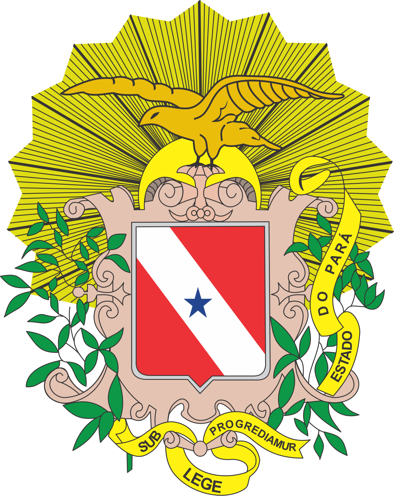
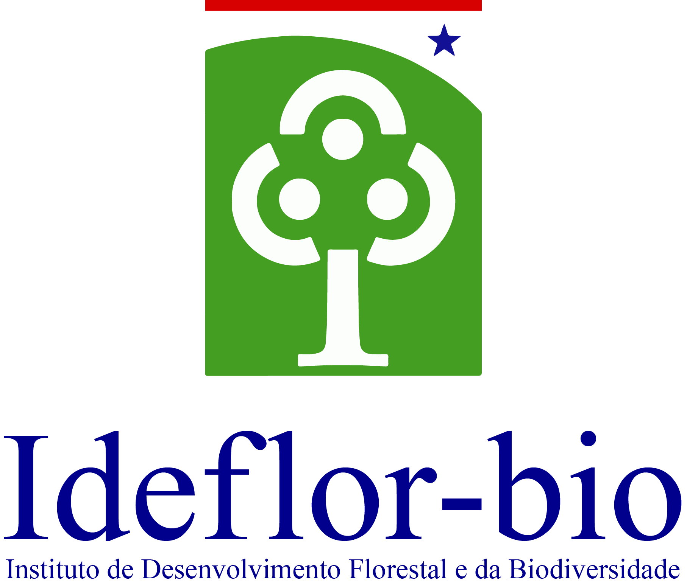
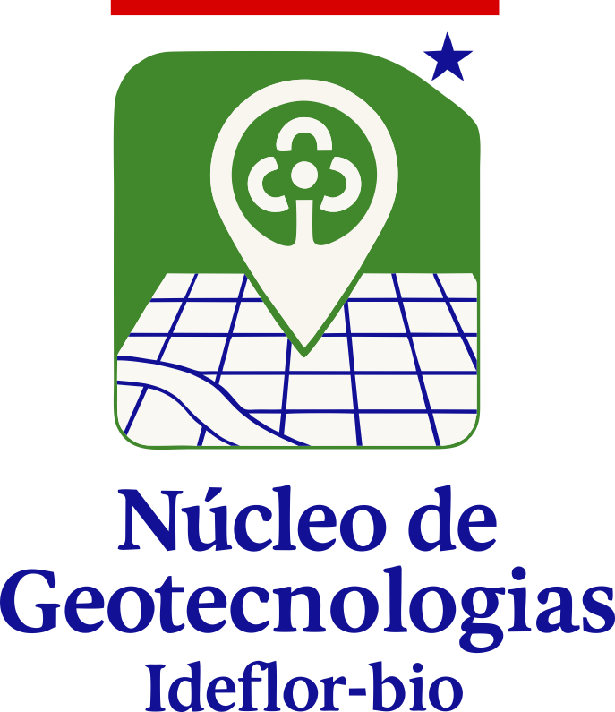

Repositório de Malhas Territoriais e Cartografia Temática
Núcleo de Geotecnologias (NGEO) • Instituto de Desenvolvimento Florestal e da Biodiversidade do Pará



Núcleo de Geotecnologias (NGEO) • Instituto de Desenvolvimento Florestal e da Biodiversidade do Pará
O Núcleo de Geotecnologias (NGEO) do IDEFLOR-Bio disponibiliza cartas temáticas das Unidades de Conservação Estaduais, corredores ecológicos, divisões por Gerências Regionais, Macrozoneamento (ZEE) e ordenamento territorial do Pará. Os arquivos podem ser baixados em PDF vetorial ou JPEG/PNG.